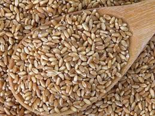
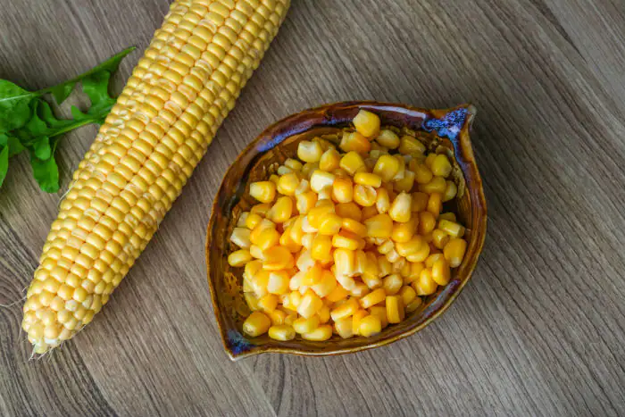
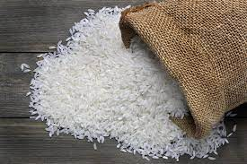
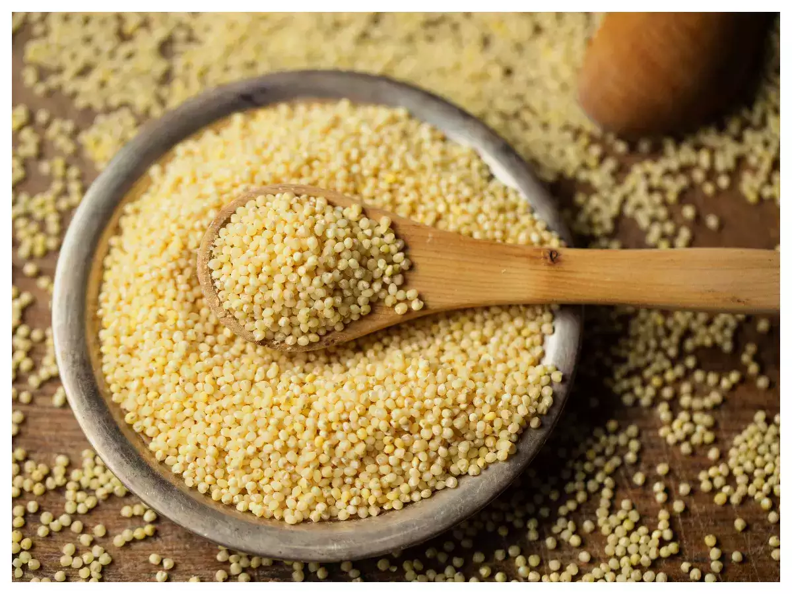
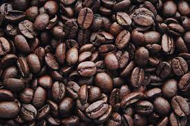
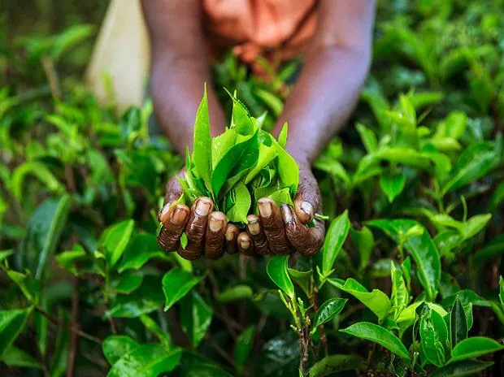
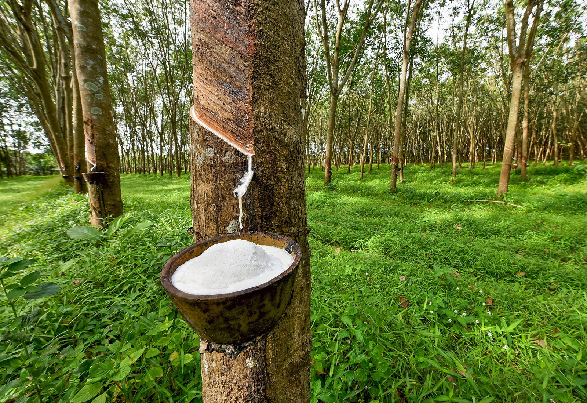

India is the world's largest producer of milk, pulses, and jute, and ranks as the second largest producer of rice, wheat, sugarcane, groundnut, vegetables, fruit, and cotton.

Wheat is a grass widely cultivated for its seed, a cereal grain which is a worldwide staple food.

Maize is widely cultivated throughout the world, and a greater weight of maize is produced each year than any other grain.

As a cereal grain, domesticated rice is the most widely consumed staple food for over half of the world's human population.

Millets are a group of highly variable small-seeded grasses, widely grown around the world as cereal crops or grains.

Coffee is a brewed drink prepared from roasted coffee beans.

Tea is an aromatic beverage prepared by pouring hot water over fresh leaves.

Rubber is harvested mainly in the form of the latex from the rubber tree.
Wheat, the most staple crop of human origin, has been in the food habits of the general population for centuries. We all consume it for our daily requirements of nutrients.
High level of rust resistance, high yielding durum wheat variety (5.7t/ha).
Good chapatti score and bread-making qualities. High in iron (38.4ppm) and zinc.

The major types of maize are Pod corn, Dent Corn, Flint Corn, Popcorn, Flour Corn, and Sweet Corn.
Grown for human consumption with a high sugar content.
Expands and puffs up when heated.

Rice is used widely in Asian and Indian cuisines. You can't make sushi without rice.
Nutty and aromatic Indian rice perfect for curry and pilaf.
Go-to rice for making creamy, yummy risotto dishes.

| Crop | Price 2019 (Rs/Q) | Price 2020 (Rs/Q) | Price 2021 (Rs/Q) | Price 2022 (Rs/Q) |
|---|---|---|---|---|
| Wheat | 1840 | 1925 | 1975 | 2015 |
| Maize | 1700 | 1760 | 1850 | 1870 |
| Rice | 1770 | 1835 | 1880 | 1968 |
| Millet | 2430 | 2550 | 2620 | 2758 |
| Coffee | 9000 | 9380 | 10600 | 11100 |
| Tea | 6400 | 7300 | 8200 | 9000 |
| Bajra | 1950 | 2000 | 2150 | 2250 |